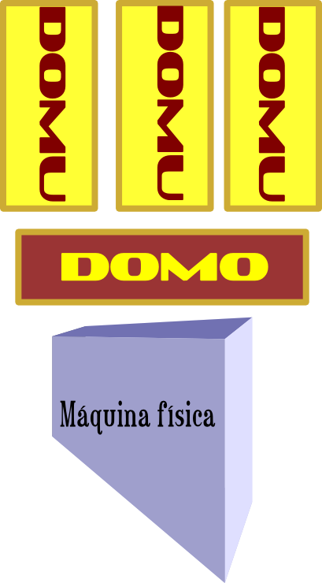

Os presento a OpenStack
- OpenStack es un producto para construir nubes públicas y privadas.
- Virtualiza la computación, el almacenamiento y la red.

Imagen de OpenStack.
Pero ¿qué es virtualizar?
¡Virtualizar es hacer algo de mentirijillas!
- Una nube es un recurso bajo demanda, escalable y facturable según uso.
- El origen de la palabra viene de la tradicional representación de recursos en la red como una nube.
¡Hay que tener cuidado con las tormentas!
Si hay que virtualizar, se virtualiza. Pero virtualizar para nada...
- El origen de la virtualización está en los mainframes de los 60
- Resurge en el año 2005 por la potencia alcanzada por los procesadores.
- Además: simplifica el control y despliegue de recursos, permite usar diferentes sistemas operativos y aprovechar mejor el hardware.
La virtualización es la killer app del software libre.
- Toda la nube está basada en software libre, empezando por los propios programas que la sustentan.
- Los estándares abiertos permite que se integren aplicaciones procedentes de muchos vendors diferentes.
- El modelo económico está basado en los servicios, no en la venta por licencia.
- La virtualización también es la killer app del software privativo.
Claro, como todo es gratis...
- El software libre te da varias libertades: copia, uso, acceso al fuente y distribución.
- Como hay libertad de uso, copia y distribución, es, en general, gratis.
- Pero lo importante es como se construye un ecosistema de herramientas a partir de uno determinado.
OpenStack es software libre
- OpenStack fue liberado por la NASA y RackSpace en 2010.
- 1278 contribuyentes han escrito 1.3 millones líneas de código; 231 compañías.
Nada de esto habría sido posible si no fuera software libre
Pero el software libre es mucho más
- Ciclos de desarrollo más rápidos.
- Mejores prácticas en el desarrollo de código seguro.
- Formatos abiertos.
- Creación de un ecosistema de marcos/librerías/código.
- Desarrollo empresarial no basado en alquiler de licencias sino personalización o servicios.
O, por ejemplo, venta de servicios basados en la nube
Virtualizando un procesador
- La virtualización de recursos con un equivalente físico (CPU, disco duro) se denomina Infrastructure as a Service, infraestructura como un servicio.
- La virtualización la llevan a cabo programas llamados hipervisores o Virtual Machine Monitors (VMM)

Imagen de la Wikipedia
Hipervisores para el niño y la niña
- KVM, Kernel-based Virtual Machine, módulo del núcleo de Linux: híbrido Tipo 1-2
- Hyper-V de (ahora) Microsoft: Tipo 1
- Xen es un hipervisor de tipo 1 con licencia GPL.
Todavía hay clases
- Un hipervisor tipo 1 (que arranca directamente) arranca un
sistema operativo anfitrión
o dominio 0
==
dom0. - El resto de los sistemas operativos invitados arrancan
en dominio de
usuario ==
domU, sin acceso al hardware.
Un poco de organización
domU ejecutan los sistemas
operativos invitados
OpenStack Compute y sus hipervisores
OpenStack Compute crea la CPU virtual
- Permite seleccionar uno o varios hipervisores
- qemu/KVM sobre x86 tienen el máximo grado de soporte, seguido de XenAPI
Nova es el software que gestiona el nodo computacional
Nada existe sin soporte físico
- Hasta 2005 la virtualización se hacía atrapando las llamadas al sistema operativo.
- Dos arquitecturas de procesador de sobremesa añaden, en esa época, soporte para virtualización: AMD-V (Pacifica) y VT-x de Intel (Vanderpool)
Estas arquitecturas añaden instrucciones que permiten realizar operaciones de virtualización de forma más eficiente.
Cincuenta sombras de virtualización
Virtualización del modo protegido o anillo 0 necesita
- Traducción binaria: traducción de una instrucciones a otras en anillo 3
- Ensombrecido de memoria para que no se tenga acceso a la misma
- Emulación de dispositivos de entrada salida.
Hay equivalente en red y E/S a la virtualización de CPU
¿Dónde está la pasta?
Vender el acceso o vender servicios
- Construcción de nubes privadas y de aplicaciones sobre la misma.
- Productos como Rackspace cloud: desde 0.022$ por hora
- EC2 el pionero, Google Compute Engine y otros muchos.

Hay más ladrillos en ese montón
- Apache CloudStack es compatible con Amazon Web Services.
- OpenNebula fue creado en la Complutense de Madrid a partir de un proyecto europeo. Permite usar diferentes interfaces.
¿Y todo eso es software libre?
La licencia Apache es una licencia de software libre permisiva == no copyleft.
Los productos cloud más populares usan ese tipo de licencia
Imagen de la wikipedia.

{kind=link}
Subamos a la plataforma
Un PaaS ofrece pilas de soluciones
- Generalmente, máquinas configuradas y provisionadas con el sistema operativo ya instalado.
- La pila de soluciones basada en Ruby on Rails, Django, J2EE, node.js o Perl + servidores web + bases de datos o almacenes de servicios.
- Privadas o modelo freemium: se paga a partir de un uso determinado.
Hágalo usted mismo
Herramientas para crear y gestionar tu propio PaaS: configuración
- Gestión de configuración del software o SCM permite seguir y controlar cambios en el software, generalmente usando un DSL
- Algunos ejemplos: Chef, Puppet o Salt
Juan Palomo se guisa y se come la nube
Herramientas para PaaS: provisionamiento
- Herramientas como Vagrant usan Chef y VirtualBox para crear VMs y conectarse con ellas.
- Permite importar imágenes, establecer configuraciones específicas por máquina y ejecutar cualquier herramienta de configuración.
- Cloud ENVy trabaja con OpenStack
Además, permite expresar en texto la creación de VMs y controlar su versión.
Y controlar las versiones es importante
Gestionar los fuentes implica gestionar las versiones en producción
- La mayoría de los PaaS usan sistemas de gestión de versiones
(como
git) - Un SCM permite desplegar, sincronizar, revertir y culpar código.
git clone,git add,git commit,git pull
Ya tenemos la Plataforma (como un servicio)
¡Vamos a usarla!
- Heroku, OpenShift de RedHat (freemium) o la Elastic Beanstalk de Amazon (de pago) ofrecen plataformas con diferentes configuraciones.
- Ofrecen lenguaje + integración web + marcos de aplicaciones + bases de datos
Lo importante son los accesorios
- Desde un panel de control, un PaaS permite añadir fácilmente cartuchos (OpenShift) o add-ons (Heroku)
- Cada usuario tiene asignado un número limitado de motores (gears en OpenShift) o Dynos
Útil para Novelas y lo que se te ocurra
Primeros PaaSos
Creación de un Dyno/Gear desde el panel de control y luego:
- Uso de cliente:
rhcoherokupara conexión y creación de apps:heroku create app - Configuración de la aplicación y
git push
¡Magia!
¿Y todo esto, con qué?
¡Con software libre!
OpenShift está liberado, el cinturón de herramientas de
Heroku también (y es compatible con otros
sistemas), git se usa en todos sitios.
Concluyendo
- La nube mola
- El software libre es imprescindible.
- Conceptos clave: virtualización, provisionamiento, configuración, infraestructura como un servicio, plataforma como un servicio, uso freemium